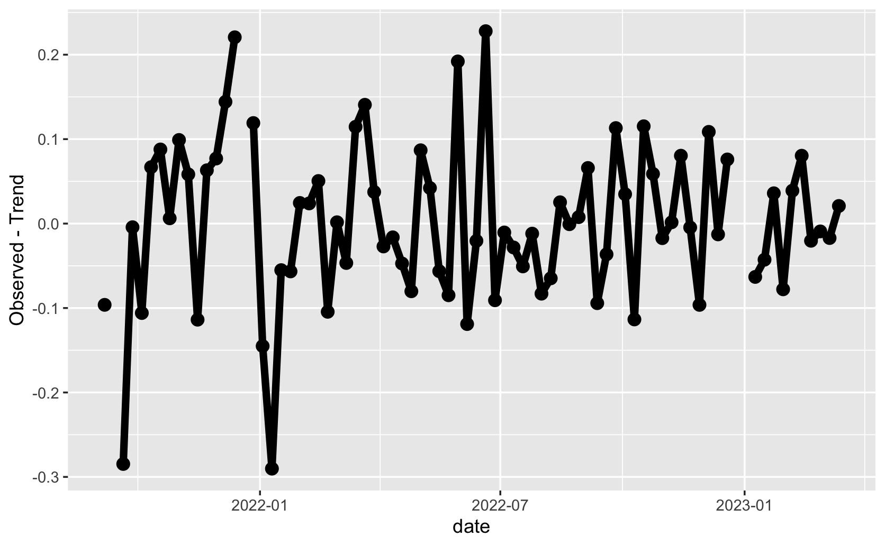

Detrending
If a process is trend stationary (nonstationary in the mean, but stationary in the variance), can we just subtract off the trend and get back a stationary time series?
Sometimes (assuming we are able to estimate it), and that’s called detrending.
Goal:
Assuming trend stationarity (\(x_t = \mu_t + y_t\), where \(y_t\) is stationary), find an estimate \(\widehat{\mu}_t\) and compute
\[
\begin{align}
\widehat{y_t} &= x_t - \widehat{\mu_t}\\
\text{Estimated Stationary process} &= \text{Data - trend estimate}
\end{align}
\] Note: Does \(y_t\) remind you of anything from regression?
Example: Subtracting off the trend
- Dark yellow line: the trend estimate
- black: The observed data
- shaded region: 95% confidence bands on trend estimates.
Can we make the time series stationary by subtracting off the trend?
Example: Subtracting off the trend
Does this time series appear stationary? In the mean, yes.

Example: Subtracting off the trend
Have we captured the temporal structure in the time series? Yes (note: we will learn about ACF hypothesis tests/p-values during the “time series data analysis process”)

Aside: managing a time series project code base
- I manage the GitHub for Houston Wastewater Epidemiology
- Check out the “issues”
- Section 1: Demo adding new issue (“basic” time series methods)
- Section 2: Demo adding new issue (link to definition of online estimation)
Activity 1: Detrending a commodity (Example 3.7)
- Given the code to generate the plot with the trend line, how would you view the equation of the trend line?
- Visualize the de-trended series. Does it appear stationary?
- Compute the acf of the salmon series and the detrended series. What do you notice?
Activity 1 Solutions
- Given the code to generate the plot with the trend line, how would you view the equation of the trend line?
Call:
lm(formula = salmon ~ time(salmon), na.action = NULL)
Residuals:
Min 1Q Median 3Q Max
-1.69187 -0.62453 -0.07024 0.51561 2.34959
Coefficients:
Estimate Std. Error t value Pr(>|t|)
(Intercept) -503.08947 34.44164 -14.61 <2e-16 ***
time(salmon) 0.25290 0.01713 14.76 <2e-16 ***
---
Signif. codes: 0 '***' 0.001 '**' 0.01 '*' 0.05 '.' 0.1 ' ' 1
Residual standard error: 0.8814 on 164 degrees of freedom
Multiple R-squared: 0.5706, Adjusted R-squared: 0.568
F-statistic: 217.9 on 1 and 164 DF, p-value: < 2.2e-16
- Visualize the de-trended series. Does it appear stationary?
- Compute the acf of the salmon series and the detrended series. What do you notice?
[1] 0.93 0.84 0.75 0.68 0.61 0.54 0.50 0.47 0.45 0.42 0.39 0.33 0.25 0.18 0.12
[16] 0.08 0.05 0.02 0.03 0.05 0.08 0.11 0.15 0.18 0.19 0.18 0.18 0.18 0.19 0.20
[31] 0.24 0.29 0.36 0.41 0.45 0.46 0.43 0.38 0.34 0.30 0.26 0.23 0.21 0.21 0.20
[46] 0.19 0.16 0.12
[1] 0.89 0.72 0.56 0.42 0.29 0.20 0.14 0.10 0.08 0.06 0.01 -0.07
[13] -0.20 -0.33 -0.43 -0.50 -0.54 -0.58 -0.56 -0.50 -0.44 -0.35 -0.26 -0.19
[25] -0.17 -0.17 -0.17 -0.17 -0.13 -0.09 0.01 0.14 0.27 0.37 0.45 0.48
[37] 0.42 0.34 0.27 0.21 0.17 0.14 0.14 0.15 0.16 0.14 0.10 0.05
Activity 2: “assuming we are able to estimate it”
- Look at pages 37-41 of the textbook
- what is “it” in this context? (what are we estimating?)
- If this is review, where did you first see these ideas?
- Put a dot on the math anxiety rating distribution on the back board
Activity 2Solutions: “assuming we are able to estimate it”
- Look at pages 37-41 of the textbook ✅
- what is “it” in this context? (what are we estimating?)
The trend (\(\beta_0\) and \(\beta_1\)), variance of the errors (\(\sigma^2_w\)). The
- How are the estimates derived?
Optimization (calculus)
- If this is review, where did you first see these ideas?
You may have seen this in Regression or Stat 426 (estimation and sampling theory), or Advanced Econometrics
- Put a dot on the math anxiety rating distribution on the back board. Color the dot based on whether you seen the math/ideas before.
Motivation/model
Consider the trend stationary model (\(y_t\) is stationary). \[
x_t = \mu_t + y_t
\] We saw how to estimate a fixed trend using a linear regression for the mean (\(\mu_t = \beta_0 + \beta_1t\))
We then subtract off the estimate of the trend (detrend), \(\widehat{\mu_t}\) so that we are working with a stationary time series:
\[
\widehat{y_t} = x_t - \widehat{\mu_t}
\]
What if the trend was not fixed? (dependent on \(t\) beyond just “\(t\) as a constant”)
A stochastic trend model
Change the model for the mean to incorporate a stochastic component (random walk with drift):
\[
\mu_t = \delta + \mu_{t-1} + w_t
\] Where \(w_t\) is white noise independent of \(y_t\).
Is \(\mu_t\) stationary? No (it’s a random walk, nonstationary in both mean and covariance)
How to “get back” to a stationary time series?
Since the stochastic component depends on just one past time point, consider the series \(x_t - x_{t-1}\).
This series is called the differenced series and the process is called differencing.
Computing the difference series in terms of the (stochastic) trend model
\[
\begin{align}
x_{t} - x_{t-1} &= (\mu_t + y_t) - (\mu_{t-1} + y_{t-1})\\
&= (\delta + \mu_{t-1} + w_t + y_t) - (\mu_{t-1} - y_{t-1})\\
& = \delta + w_t + y_t - y_{t-1}
\end{align}
\] Need to compute mean function \(\E(x_t - x_{t-1}\) and autocovariance function \(cov(x_t - x_{t-1}, x_s- x_{s-1})\) and check if they do not depend on \(t\) (mean) and just depend on the lag \(h = s-t\).
…But the answer is we do get a stationary series!
Activity 5: Comparing Differencing and Detrending
Compare the Acfs of the differenced and detrended salmon series. What do you notice?
Activity 5 Solutions: Comparing Differencing and Detrending
Compare the Acfs of the differenced and detrended salmon series. What do you notice?
[1] 0.89 0.72 0.56 0.42 0.29 0.20 0.14 0.10 0.08 0.06 0.01 -0.07
[13] -0.20 -0.33 -0.43 -0.50 -0.54 -0.58 -0.56 -0.50 -0.44 -0.35 -0.26 -0.19
[25] -0.17 -0.17 -0.17 -0.17 -0.13 -0.09 0.01 0.14 0.27 0.37 0.45 0.48
[37] 0.42 0.34 0.27 0.21 0.17 0.14 0.14 0.15 0.16 0.14 0.10 0.05
[1] 0.26 -0.02 -0.08 -0.10 -0.19 -0.11 -0.10 -0.06 0.02 0.07 0.15 0.24
[13] 0.00 -0.15 -0.14 -0.07 -0.04 -0.23 -0.15 -0.05 -0.07 -0.06 0.13 0.21
[25] 0.11 -0.01 0.00 -0.16 -0.09 -0.23 -0.10 0.04 0.12 0.09 0.23 0.34
[37] 0.08 -0.06 -0.06 -0.08 -0.07 -0.09 -0.06 0.06 0.10 0.06 0.04 0.12
The detrended series and the differenced series both show cycles, but the structure of those cycles appears different.
Next time: Smoothing
We’ve seen three explicity ways of modeling a trend (moving average (hw 1), and regression with time and random walk).
How else could we model a trend?